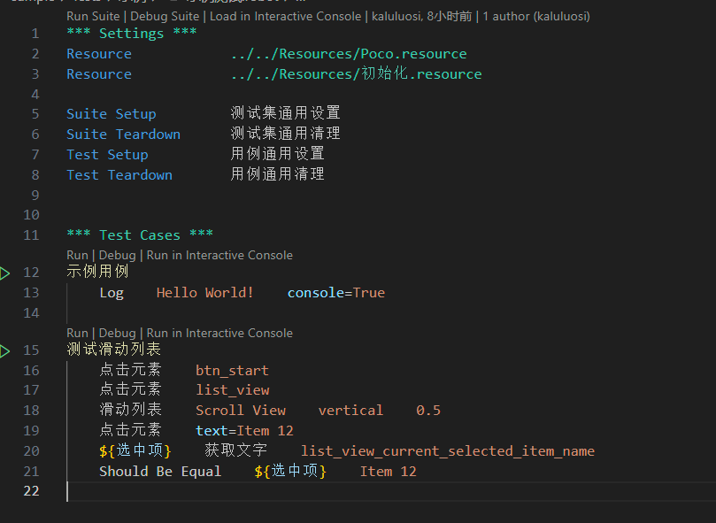

Robotframework-Airtest
Robotframework-Airtest 是Robot Framework的Airtest测试库封装，同时提供了一整套的自动化测试方案，可以快速搭建基于Robot Framework的自动化测试项目。
Note
目前只封装了poco的接口
后续可能增加Airtest相关接口，但是VSCode代码编辑器中无法像AirtestIDE编辑器那样将图片显示在编辑器中，所以还需要开发专用插件。
安装
命令行中输入 ra 显示下面内容，说明安装成功。
> ra
Usage: ra [OPTIONS] COMMAND [ARGS]...
================================================================
Airtest For Robot Framework
================================================================
Options:
--help Show this message and exit.
Commands:
start 创建模板项目
docs 打开文档
vmg 界面模型导出工具
什么是Robot Framework
国内的测试如果有看过一些软件测试的书籍那么应该听说过关键字驱动测试这个名词，但是工作中却从很少触过关键字驱动的实际应用。而Robot Framework 就是一种关键字驱动测试的测试框架。
Robot Framework是一个基于Python的、可扩展的、关键字驱动的测试自动化框架，用于端到端的验收测试或者验收驱动测试开发（ATDD）中。它使用自己的独特的类似表格的脚本语言来编写测试脚本，其关键字语法十分人类友好容易理解阅读。
用Robot Framework编写的脚本如下面这样：

Robot Framework的优点：
- 表格式的语法简单易用，以统一的方式 创建测试用例
- 可以通过现有关键字创建可复用的 高层关键字
- 提供了直观的HTML格式的 测试报告 和 日志文件
- 作为一个测试平台，是应用无关的
- 提供了 测试库API，可以轻易地使用Python或者Java创建自定义的测试库
- 提供了 命令行接口 和基于XML的 输出文件，可以与现有框架集成（如持续集成系统）
- 提供了多种测试库支持，如用于web测试的Selenium，Java GUI测试，启动进程，Telnet，SSH等
- 可以创建 数据驱动的测试用例
- 内置支持 变量，在不同的环境中特别实用
- 提供 标签 来分类和 选择测试用例
- 非常容易与源码控制系统集成，因为 测试套件 就是文件夹和文本文件
- 提供了 用例级别 和 测试套件级别 的setup和teardown
- 模块化的架构，支持针对不同接口的应用程序创建测试
- Robot脚本语法非常适合流程性测试用例
Robot Framework 非常适合给外行用户使用，因为它简单易用，可以用更偏向人类语义的方式编写具体用例，并且提供了直观的HTML格式的测试报告。
但是，Robot Framework 也有其不足之处，比如：
- Robot脚本语言的语法虽然提供了条件语句和循环语句，但是要用Robot脚本编写复杂的逻辑还是十分困难，Robot Framework更适合编写一些简单的测试用例。不过Robot Framework可以直接调用python脚本的函数，因此我们可以把复杂逻辑封装到python脚本然后供Robot脚本调用。
- 需要另外学习Robot脚本语法。虽然Robot脚本语法本身不是很复杂，但是还是需要花时间去学习。尤其是变量类型方面很容易让人混乱。
总之，Robot Framework适合末端执行测试编写用例，无程序基础的测试人员就算不熟悉编程语言也可以编写测试用例。虽然Robot脚本语言不像其他编程语言那么灵活，但是相对的也减少了测试人员过于自由而迷路的问题。
Warning
本文档不讲解Robot Framework的教程，你需要自己去学习。本文档也假定你已经会Robot Framework。
Note
你可以去看RobotFramework中文手册了解入门。
特性介绍
下面是简单介绍一下这个Package能够做什么。
用符合人类语言语义的方式编写测试脚本
*** Test Cases ***
修改签名
# [Tags] DEBUG
${签名} Set Variable abcdefg
userInfoViewUI.输入文字默认_EditLabSign ${签名} ${True}
点击屏幕中间
界面打开流程.关闭个人信息界面
界面打开流程.打开个人信息界面
${获取签名} userInfoViewUI.获取文字默认_EditLabSign
Should Be Equal ${签名} ${获取签名} 签名
面向界面模型测试
不再原始的一个个查找界面元素，直接引用高度封装的界面模型，对界面模型进行操作。 界面模型已经封装好查询元素和简单的点击操作关键字，你只需开箱即用的调用。
Warning
目前只支持Unity的Prefab，以后再支持其他引擎。
前端界面资源(Prefab)导出界面模型
内置界面Prefab导出界面模型资源脚本。
Note
目前只支持解析Unity Prefab文件导出成界面模型资源
"Dry Run" 预测试提前发现用例错误
测试脚本随着版本迭代，界面结构改变，导致脚本过期失效。然而要一个个检查所有的测试脚本找出哪些脚本哪一行失效是成本十分高的事情。
我们可以利用Robot Framework的 Dry Run/干跑 快速过一遍所有用例，找出已经无效的关键字，并定位到脚本，输出报告。
Dry Run相当于是一个测试测试脚本的测试。
多语言支持
内置多语言资源文件，脚本内使用的字符串变量定义在多语言资源文件中，测试执行的时候传入"-v LANGAGE:语言"来控制读取哪个语言表实现多语言切换。
界面观察者
注册监控关键字，每一次关键字执行的时候会先执行监控关键字，条件成立就执行。以此来解决操作过程中意外弹窗的检测和处理。
数据驱动测试
Robot Framework提供的测试模板(Template)功能，可以将测试用例变成以空格为分隔符的表格，传入模板关键字中执行测试。这个测试用例不会因为其中一个测试数据失败而终止，而是会执行所有的测试数据，然后汇总所有测试结果。全部都通过的时候这条用例通过，只要有一个失败用例就失败。